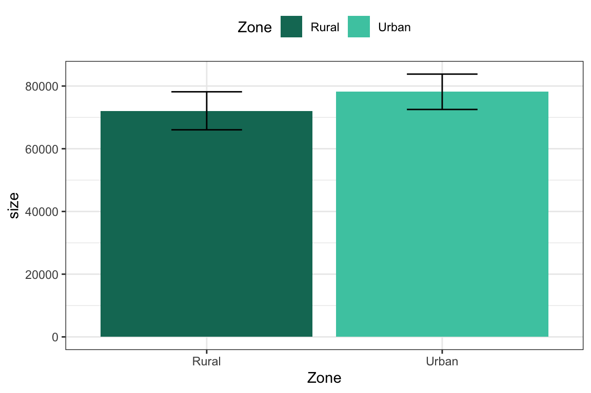
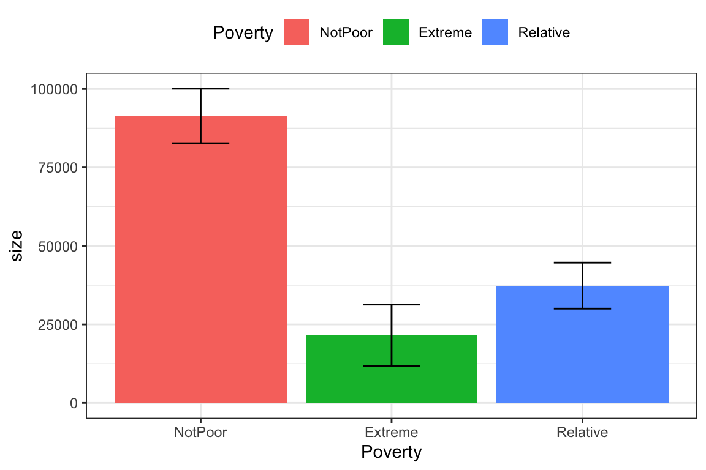
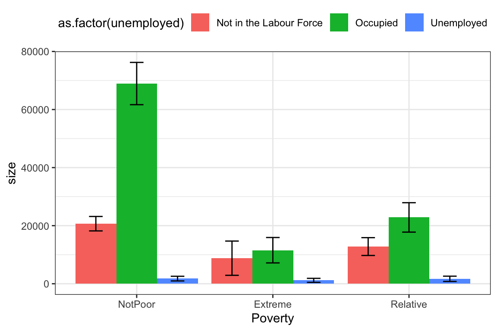
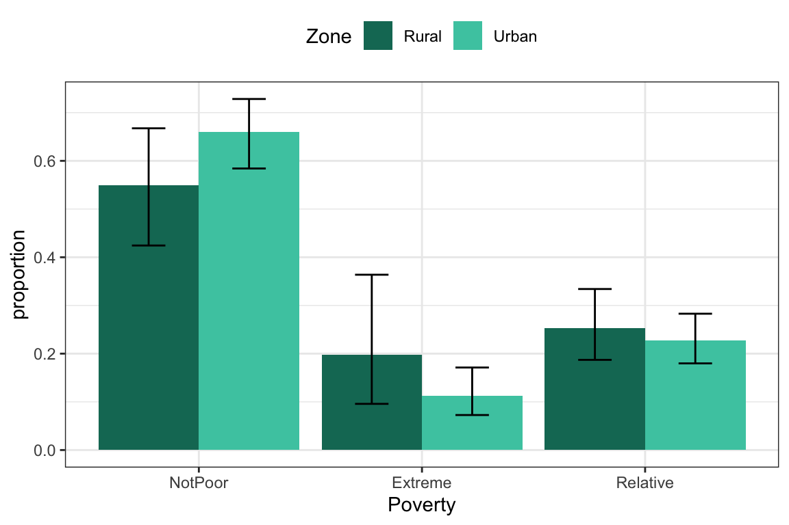
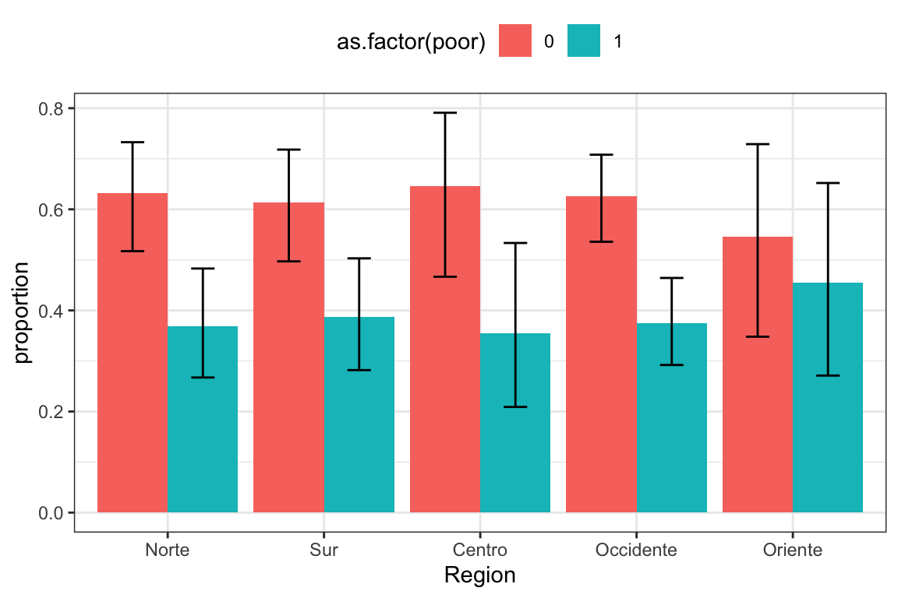
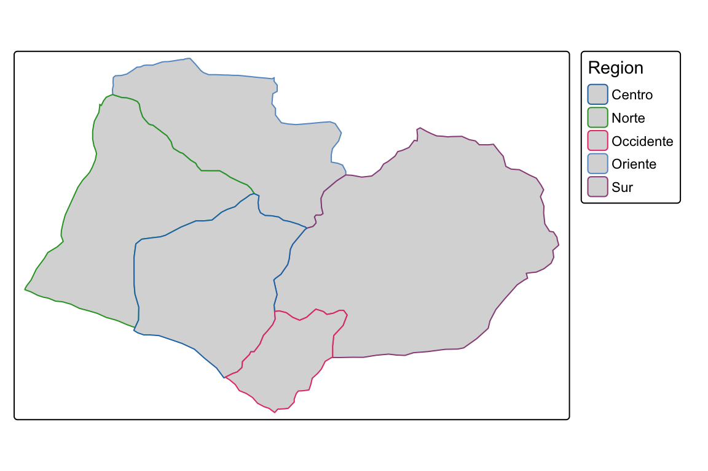
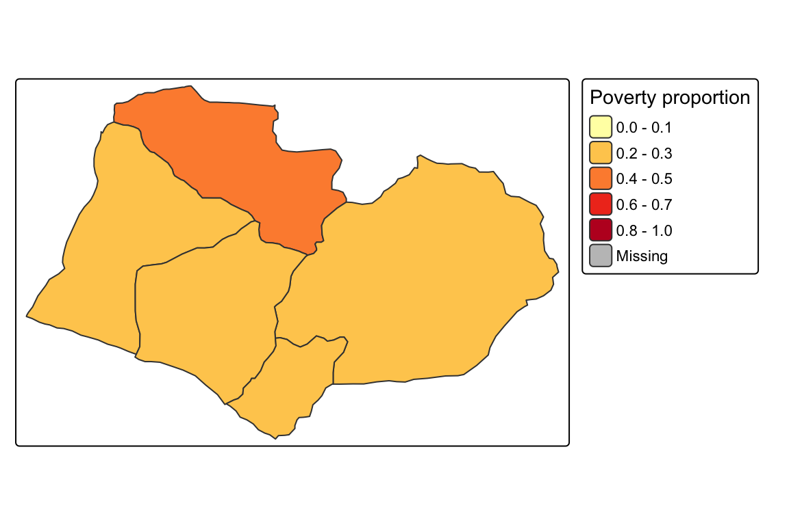
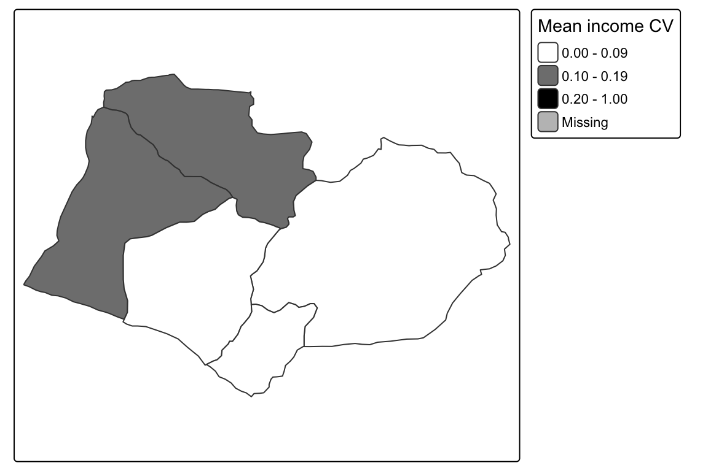
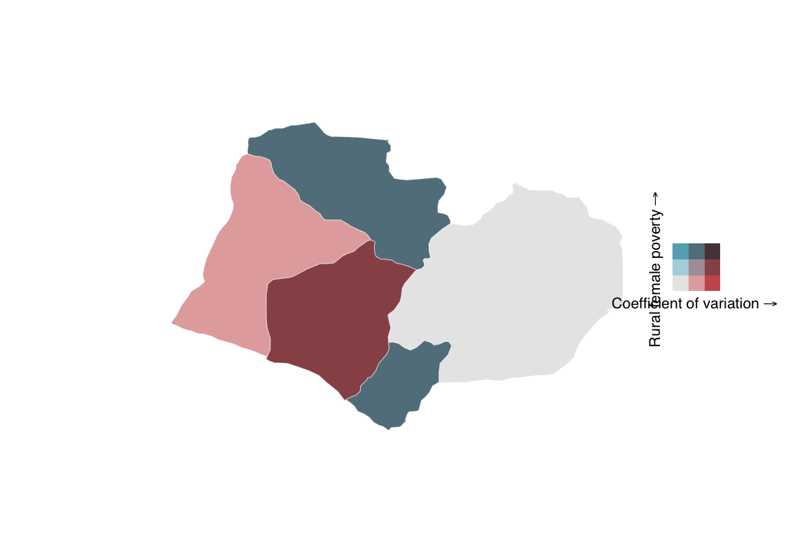

library(tidyverse)
library(survey)
library(srvyr)
survey_data <- readRDS("../Data/encuesta.rds")
options(survey.lonely.psu = "adjust")
survey_design <- survey_data %>%
as_survey_design(
strata = Stratum,
ids = PSU,
weights = wk,
nest = TRUE
)4 Análisis de variables categóricas
En el análisis de encuestas de hogares, uno de los productos más habituales, como explican Heeringa, West, y Berglund (2017) y Comisión Económica para América Latina y el Caribe (2023), es la estimación de parámetros descriptivos asociados a variables categóricas, los cuales permiten sintetizar las principales características de la población. Estas medidas facilitan una representación clara y comprensible de fenómenos sociales a partir de información recolectada mediante muestras probabilísticas.
Entre los indicadores descriptivos más utilizados para analizar variables categóricas se encuentran, según Heeringa, West, y Berglund (2017) y Agresti (2019), las frecuencias y las proporciones. Las frecuencias indican cuántas personas u hogares pertenecen a cada categoría, por ejemplo, el número de personas en condición de pobreza, mientras que las proporciones expresan el peso relativo de cada categoría dentro del conjunto poblacional.
Aunque el análisis descriptivo de variables categóricas suele apoyarse en estos parámetros básicos, también es posible combinarlas con medidas derivadas de variables numéricas, como cuantiles o indicadores de desigualdad, las cuales se abordaron en el capítulo anterior. No obstante, en este capítulo nos concentraremos exclusivamente en la descripción y estimación de parámetros asociados a variables categóricas, empleando diseños muestrales complejos.
El análisis comienza con la definición del diseño de muestreo, siguiendo los lineamientos explicados en capítulos anteriores y utilizando la misma base de datos. Este paso es fundamental porque, como señalan Heeringa, West, y Berglund (2017) y Comisión Económica para América Latina y el Caribe (2023), permite incorporar adecuadamente las características del diseño complejo de la encuesta, tales como los factores de expansión, las unidades primarias de muestreo y los estratos de selección. La correcta especificación de estos elementos garantiza que las estimaciones obtenidas sean representativas de la población objetivo y que las medidas de precisión reflejen apropiadamente la variabilidad introducida por el esquema de muestreo.
Luego, se generan algunas variables categóricas derivadas de la información original de la encuesta, las cuales serán utilizadas en los ejercicios desarrollados a lo largo de este capítulo. Entre ellas, se construye una variable que identifica si la persona se encuentra o no en condición de pobreza. De manera complementaria, también se crean otras variables categóricas de interés analítico que permitirán realizar desagregaciones y comparaciones entre distintos grupos de la población:
survey_design <- survey_design %>%
mutate(
poor = ifelse(Poverty != "NotPoor", 1, 0),
unemployed = ifelse(Employment == "Unemployed", 1, 0),
age_18 = case_when(
Age < 18 ~ "< 18 years",
TRUE ~ ">= 18 years"
)
)En el código anterior se crean nuevas variables derivadas utilizando la función mutate() del paquete dplyr. Las variables poor y unemployed se construyen mediante la función ifelse(), que evalúa una condición lógica y asigna un valor dependiendo de si esta se cumple o no. En este caso, las variables toman el valor 1 cuando la persona se encuentra en condición de pobreza o desempleo, respectivamente, y 0 en caso contrario. Por su parte, la variable age_18 se genera mediante la función case_when(), la cual permite definir categorías a partir de una o varias condiciones de forma más clara y flexible que ifelse(). Esta función resulta especialmente útil cuando se requiere construir variables categóricas con múltiples niveles. En el ejemplo, las personas menores de 18 años se clasifican en la categoría "< 18 years", mientras que el resto se agrupa en la categoría ">= 18 years".
Además de lo anterior, se hace necesario generar subgrupos de la población para realizar estimaciones desagregadas. En este capítulo se emplean cuatro subpoblaciones de ejemplo:
urban_subset <- survey_design %>%
filter(Zone == "Urban")
rural_subset <- survey_design %>%
filter(Zone == "Rural")
female_subset <- survey_design %>%
filter(Sex == "Female")
male_subset <- survey_design %>%
filter(Sex == "Male")4.1 Estimación del tamaño poblacional
En el análisis de encuestas de hogares, es fundamental, como destaca Comisión Económica para América Latina y el Caribe (2023), estimar el tamaño de las subpoblaciones, entendido como el número de personas u hogares que pertenecen a categorías específicas y la proporción que representan dentro de la población. Estas estimaciones, basadas en variables categóricas, permiten caracterizar el perfil demográfico y socioeconómico de la población, información clave para orientar la asignación de recursos, diseñar políticas públicas y formular programas sociales. Por ejemplo, estimar cuántas personas se encuentran por debajo de la línea de pobreza, cuántas están desempleadas o cuántas alcanzaron determinado nivel educativo es esencial para identificar brechas y evaluar condiciones de bienestar.
La estimación del tamaño de una población o subpoblación, de acuerdo con Gutiérrez (2016) y Comisión Económica para América Latina y el Caribe (2023), se realiza a partir de variables categóricas, que segmentan a la población en grupos mutuamente excluyentes (particiones). El tamaño poblacional hace referencia al número total de individuos u hogares que, en la base de datos de la encuesta, pertenecen a una categoría determinada. Estas categorías pueden corresponder, por ejemplo, a estados de ocupación o niveles educativos alcanzados. Para obtener estas estimaciones, se combinan las respuestas de los encuestados con los pesos muestrales, que indican cuántas personas u hogares representa cada unidad de la muestra dentro de la población total.
El estimador del tamaño de la población, siguiendo a Särndal, Swensson, y Wretman (2003) y Gutiérrez (2016), se define como:
\[ \hat{N} = \sum_{h} \sum_{i} \sum_{k} w_{hik} \]
En donde, \(w_{hik}\) es el peso o factor de expansión de la unidad \(k\) en la UPM \(i\) del estrato \(h\). Asimismo, la estimación del tamaño de una subpoblación sigue, de acuerdo con Gutiérrez (2016), el mismo principio, pero se enmarca en un subconjunto definido por una característica específica. Para determinar cuántas personas pertenecen a una categoría particular, se identifica dicho grupo en la base de datos y se suman sus pesos muestrales. Esto permite cuantificar grupos de interés específicos y conocer su tamaño dentro de la población:
\[ \hat{N}_d = \sum_{h} \sum_{i} \sum_{k} w_{hik} \ I(y_{hik}=d) \]
En donde \(I(y_{hik}=d)\) es una variable binaria que toma el valor de 1 si la unidad \(k\) de la UPM \(i\) en el estrato \(h\) pertenece a la categoría \(d\) de la variable de interés \(y\), y 0 en caso contrario. Nótese además, como muestran Deville y Särndal (1992) y Särndal, Swensson, y Wretman (2003), que, si \(d\) fue utilizada en la calibración de los pesos, el valor de \(\hat{N}_d\) coincidirá con el control externo aplicado.
En R, y utilizando el diseño muestral definido previamente, es posible, generar resúmenes de la información de la encuesta para cada categoría de la variable Zone. Para ello, los datos se agrupan según la zona geográfica, lo que permite obtener resultados independientes para cada uno de estos dominios de estudio. A partir de este procedimiento se producen dos tipos principales de resultados. En primer lugar, se calcula el número de observaciones efectivamente recolectadas en la muestra, sin considerar los factores de expansión, lo que corresponde al tamaño muestral disponible en cada zona. En segundo lugar, se estima el tamaño poblacional asociado a cada dominio incorporando la información del diseño de muestreo.
Junto con las estimaciones poblacionales también se obtienen medidas de precisión, como el error estándar y el intervalo de confianza, las cuales permiten evaluar el nivel de incertidumbre asociado a los resultados producidos a partir de la muestra. Los resultados se presentan en la tabla 4.1. En dicha tabla, n representa el número de observaciones de la muestra en cada zona, mientras que size corresponde a la estimación del total poblacional de la subpoblación. Por su parte, la función unweighted() se utiliza para calcular resúmenes no ponderados directamente a partir de los datos observados en la muestra.
survey_design %>%
group_by(Zone) %>%
summarise(
n = unweighted(n()),
size = survey_total(vartype = c("se", "ci"))
)| Zone | n | size | size_se | size_low | size_upp |
|---|---|---|---|---|---|
| Rural | 1297 | 72102 | 3062 | 66039 | 78165 |
| Urban | 1308 | 78164 | 2847 | 72526 | 83802 |
En efecto, el tamaño de muestra fue de 1297 personas en la zona rural y de 1308 en la zona urbana. A partir de estas muestras se estimó una población de 72,102 personas para la zona rural, con un error estándar de 3,062, y de 78,164 personas para la zona urbana, con un error estándar de 2,847. Estos resultados reflejan no solo el tamaño estimado de la población en cada dominio, sino también el nivel de precisión asociado a las estimaciones obtenidas a partir del diseño muestral.
Considerando un nivel de confianza del 95%, los intervalos de confianza para las estimaciones poblacionales fueron de 66,038.5 a 78,165.4 personas en la zona rural y de 72,526.2 a 83,801.7 personas en la zona urbana. De manera análoga, también es posible estimar el número de personas según los distintos niveles de pobreza, cuyos resultados se presentan en la tabla 4.2.
survey_design %>%
group_by(Poverty) %>%
summarise(size = survey_total(vartype = c("se", "ci")))| Poverty | size | size_se | size_low | size_upp |
|---|---|---|---|---|
| NotPoor | 91398 | 4395 | 82696 | 100101 |
| Extreme | 21519 | 4949 | 11719 | 31319 |
| Relative | 37349 | 3695 | 30032 | 44666 |
Otra variable categórica relevante en las encuestas de hogares es el estado de ocupación. A continuación se presenta el código correspondiente, cuyos resultados se muestran en la tabla 4.3. En este caso, la información se agrupa según las categorías de la variable Employment, lo que permite obtener estimaciones separadas para cada condición de actividad laboral de la población. Mediante el uso de la función group_by() es posible desagregar las estimaciones en niveles más detallados, facilitando el análisis comparativo entre los distintos grupos ocupacionales.
Antes de realizar las estimaciones, se excluyen los registros con valores faltantes en la variable de empleo, garantizando que los resultados se calculen únicamente con información válida. Posteriormente, para cada categoría de ocupación se estima el tamaño poblacional utilizando el diseño muestral definido previamente. Además de la estimación puntual, también se calculan medidas de precisión, específicamente el error estándar y los intervalos de confianza, lo que permite evaluar el grado de incertidumbre asociado a cada estimación.
survey_design %>%
filter(!is.na(Employment)) %>%
group_by(Employment) %>%
summarise(size = survey_total(vartype = c("se", "ci")))| Employment | size | size_se | size_low | size_upp |
|---|---|---|---|---|
| Unemployed | 4635 | 761 | 3129 | 6141 |
| Inactive | 41465 | 2163 | 37183 | 45748 |
| Employed | 61877 | 2540 | 56847 | 66907 |
A partir de los resultados obtenidos se estima que 4,634.8 personas se encuentran desempleadas, con un intervalo de confianza del 95% entre 3,128.6 y 6,140.9 personas. Asimismo, se estima que 41,465.2 personas pertenecen a la población inactiva, con un intervalo de confianza entre 37,182.6 y 45,747.8. Finalmente, la población ocupada se estimó en 61,877.0 personas, con un intervalo de confianza de 56,847.0 a 66,907.0 personas.
Finalmente, las estimaciones también pueden desagregarse simultáneamente por más de una variable categórica. Por ejemplo, es posible analizar el estado ocupacional según el nivel de pobreza, cuyos resultados se presentan en la tabla 4.4, de donde se puede concluir, entre otros aspectos, que aproximadamente 44,600.3 personas ocupadas no se encuentran en condición de pobreza, con un intervalo de confianza del 95% entre 39,459.6 y 49,741.0 personas. Asimismo, se estima que 6,421.8 personas inactivas se encuentran en situación de pobreza extrema, con un intervalo de confianza al 95% entre 3,806.6 y 9,037.0 personas.
survey_design %>%
filter(!is.na(Employment)) %>%
group_by(Employment, Poverty) %>%
cascade(
size = survey_total(vartype = c("se", "ci")),
.fill = "Total"
)| Employment | Poverty | size | size_se | size_low | size_upp |
|---|---|---|---|---|---|
| Unemployed | NotPoor | 1768 | 405 | 966 | 2571 |
| Unemployed | Extreme | 1169 | 348 | 480 | 1859 |
| Unemployed | Relative | 1697 | 458 | 791 | 2604 |
| Unemployed | Total | 4635 | 761 | 3129 | 6141 |
| Inactive | NotPoor | 24346 | 1736 | 20908 | 27784 |
| Inactive | Extreme | 6422 | 1321 | 3807 | 9037 |
| Inactive | Relative | 10697 | 1460 | 7806 | 13589 |
| Inactive | Total | 41465 | 2163 | 37183 | 45748 |
| Employed | NotPoor | 44600 | 2596 | 39460 | 49741 |
| Employed | Extreme | 5128 | 1122 | 2907 | 7349 |
| Employed | Relative | 12149 | 1347 | 9483 | 14816 |
| Employed | Total | 61877 | 2540 | 56847 | 66907 |
| Total | Total | 107977 | 3466 | 101115 | 114839 |
4.2 Estimación de proporciones
Las proporciones permiten, como explican Korn y Graubard (1999) y Heeringa, West, y Berglund (2017), expresar el peso relativo que tienen determinados grupos dentro de la población. Por ejemplo, conocer el porcentaje de hogares que se encuentran por debajo de la línea de pobreza es esencial para evaluar desigualdades y caracterizar condiciones de bienestar. Para obtener este tipo de indicadores, se calcula el promedio ponderado de la variable dicotómica, lo que asegura que la estimación represente adecuadamente la distribución poblacional. De acuerdo con estos autores, al convertir las categorías originales en variables indicadoras, la proporción estimada se calcula como:
\[ \hat{p}_d = \frac{\hat{N}_d}{\hat{N}} = \frac{\displaystyle\sum_{h} \sum_{i} \sum_{k} w_{hik} \ I(y_{hik}=d)} {\displaystyle\sum_{h} \sum_{i} \sum_{k} w_{hik}} \]
Si bien este estimador es conceptualmente sencillo, corresponde, como muestran Gutiérrez (2016) y Heeringa, West, y Berglund (2017), a una función no lineal de los totales poblacionales. Por esta razón, para derivar sus propiedades estadísticas, particularmente su varianza y error estándar, es necesario recurrir a métodos de aproximación como la linealización de Taylor. En este contexto, se utiliza la función \(z_{hik}=I(y_{hik}=d)-\hat{p}_d\). En la práctica, los programas estadísticos implementan automáticamente estos procedimientos y generan las estimaciones de proporciones junto con sus respectivos errores estándar e intervalos de confianza.
Cuando las proporciones toman valores muy cercanos a 0 o a 1, Korn y Graubard (1999) explican que la precisión de las estimaciones puede verse afectada, por lo que en muchos casos es necesario contar con tamaños muestrales mayores para obtener resultados estables y confiables. Esta situación es especialmente relevante en el análisis de fenómenos poco frecuentes o altamente concentrados, donde pequeñas variaciones en la muestra pueden producir cambios importantes en las estimaciones.
Adicionalmente, Korn y Graubard (1999) y Agresti (2019) advierten que los intervalos de confianza construidos mediante aproximaciones normales pueden presentar límites inferiores menores que 0 o superiores mayores que 1, lo que dificulta su interpretación al tratarse de proporciones. Para evitar este problema, una alternativa ampliamente utilizada consiste en aplicar la transformación logit antes de construir los intervalos de confianza. Este procedimiento garantiza que, al regresar a la escala original, los límites obtenidos permanezcan dentro del rango válido de las proporciones.
\[ CI(\hat{p}_d; 1-\alpha) = \frac{exp \left[ln\left(\frac{\hat{p}_d}{1-\hat{p}_d}\right) \pm \frac{\widehat{me}}{\hat{p}_d(1-\hat{p}_d)}\right]}{1 + exp \left[ln\left(\frac{\hat{p}_d}{1-\hat{p}_d}\right) \pm \frac{\widehat{me}}{\hat{p}_d(1-\hat{p}_d)}\right]} \]
En donde \(\widehat{me}\) corresponde al margen de error estimado y se obtiene a partir del producto entre el valor crítico de la distribución \(t\) de Student y el error estándar estimado de la proporción \(\hat{p}_d\). El término \(t_{1-\alpha/2, df}\) representa el percentil asociado al nivel de confianza seleccionado, considerando \(df\) grados de libertad. En el contexto de encuestas complejas, Korn y Graubard (1999) y Heeringa, West, y Berglund (2017) explican que estos grados de libertad suelen definirse como la diferencia entre el número de unidades primarias de muestreo (UPM) y el número de estratos presentes en el subgrupo o dominio de análisis.
A diferencia de otros programas estadísticos que presentan los resultados en porcentaje, R reporta las proporciones en la escala [0,1]. Las funciones utilizadas permiten calcular directamente las estimaciones, sus errores estándar e intervalos de confianza, lo que facilita el análisis de variables categóricas en encuestas de hogares. A continuación se ilustra cómo obtener la proporción de personas por zona usando el diseño muestral previamente definido, presentada en la tabla 4.5:
survey_design %>%
group_by(Zone) %>%
summarise(proportion = survey_mean(
vartype = c("se", "ci"),
proportion = TRUE
))| Zone | proportion | proportion_se | proportion_low | proportion_upp |
|---|---|---|---|---|
| Rural | 0.48 | 0.014 | 0.452 | 0.508 |
| Urban | 0.52 | 0.014 | 0.492 | 0.548 |
En este ejemplo, de acuerdo con la documentación de Freedman Ellis y Schneider (2026), la función survey_mean() se utiliza para calcular la estimación de proporciones poblacionales y, mediante el argumento proportion = TRUE, se especifica que el interés se centra en estimar la distribución relativa de la población entre las distintas categorías de la variable analizada. Los resultados indican que aproximadamente el 47.9% de las personas reside en la zona rural, con un intervalo de confianza del 95% entre 45.2% y 50.7%, mientras que el 52.0% corresponde a población residente en la zona urbana, con un intervalo de confianza entre 49.2% y 54.7%.
La librería srvyr también dispone de la función survey_prop(), diseñada específicamente para la estimación de proporciones en encuestas complejas. Esta función produce resultados equivalentes a los obtenidos con survey_mean(), facilitando además una sintaxis más directa e intuitiva cuando el objetivo del análisis es exclusivamente el cálculo de proporciones. Los resultados obtenidos mediante esta alternativa se presentan en la tabla 4.6.
survey_design %>%
group_by(Zone) %>%
summarise(proportion = survey_prop(vartype = c("se", "ci")))| Zone | proportion | proportion_se | proportion_low | proportion_upp |
|---|---|---|---|---|
| Rural | 0.48 | 0.014 | 0.452 | 0.508 |
| Urban | 0.52 | 0.014 | 0.492 | 0.548 |
Si el interés se centra ahora en estimar proporciones para subpoblaciones específicas, por ejemplo, la proporción de hombres y mujeres que residen en la zona urbana, es necesario restringir el análisis a dicho dominio de estudio y posteriormente calcular las estimaciones correspondientes para cada categoría de sexo. El código computacional correspondiente se presenta en la tabla 4.7.
urban_subset %>%
group_by(Sex) %>%
summarise(proportion = survey_prop(vartype = c("se", "ci")))| Sex | proportion | proportion_se | proportion_low | proportion_upp |
|---|---|---|---|---|
| Female | 0.537 | 0.013 | 0.511 | 0.563 |
| Male | 0.463 | 0.013 | 0.437 | 0.489 |
A partir de estas estimaciones se observa que, en la zona urbana, el 53.6% de la población corresponde a mujeres, con un intervalo de confianza del 95% entre 51.0% y 56.2%, mientras que el 46.4% corresponde a hombres, con un intervalo de confianza entre 43.7% y 48.9%. Estos resultados permiten apreciar no solo la distribución porcentual de la población según sexo, sino también el nivel de precisión asociado a las estimaciones.
De manera análoga, es posible realizar el mismo ejercicio para la población residente en la zona rural, estimando la proporción de hombres y mujeres. Este tipo de desagregación permite comparar la composición poblacional según sexo entre las áreas urbana y rural, proporcionando una visión más detallada de las características demográficas de la población encuestada. Los resultados correspondientes se presentan en la tabla 4.8.
rural_subset %>%
group_by(Sex) %>%
summarise(
n = unweighted(n()),
proportion = survey_prop(vartype = c("se", "ci"))
)| Sex | n | proportion | proportion_se | proportion_low | proportion_upp |
|---|---|---|---|---|---|
| Female | 679 | 0.516 | 0.008 | 0.500 | 0.533 |
| Male | 618 | 0.484 | 0.008 | 0.467 | 0.500 |
Ahora bien, si el análisis se restringe únicamente a la población masculina incluida en la base de datos y el interés consiste en estimar la distribución porcentual de los hombres según la zona de residencia, es posible calcular la proporción de hombres que viven en áreas urbanas y rurales utilizando el diseño muestral previamente definido. El código computacional correspondiente se presenta en la tabla 4.9.
male_subset %>%
group_by(Zone) %>%
summarise(proportion = survey_prop(vartype = c("se", "ci")))| Zone | proportion | proportion_se | proportion_low | proportion_upp |
|---|---|---|---|---|
| Rural | 0.491 | 0.018 | 0.455 | 0.526 |
| Urban | 0.509 | 0.018 | 0.474 | 0.545 |
Si se desea estimar resultados con varios niveles de desagregación, al igual que en los capítulos anteriores, el uso de la función group_by() permite generar distintos niveles de agregación mediante la combinación de dos o más variables categóricas. Por ejemplo, es posible estimar la proporción de hombres según zona de residencia y condición de pobreza de manera simultánea. Este tipo de análisis permite caracterizar con mayor detalle las condiciones socioeconómicas de subpoblaciones específicas. El procedimiento correspondiente se presenta en la tabla 4.10.
male_subset %>%
group_by(Zone, Poverty) %>%
summarise(proportion = survey_prop(vartype = c("se", "ci")))| Zone | Poverty | proportion | proportion_se | proportion_low | proportion_upp |
|---|---|---|---|---|---|
| Rural | NotPoor | 0.549 | 0.063 | 0.424 | 0.668 |
| Rural | Extreme | 0.198 | 0.067 | 0.096 | 0.364 |
| Rural | Relative | 0.254 | 0.037 | 0.187 | 0.334 |
| Urban | NotPoor | 0.660 | 0.037 | 0.584 | 0.728 |
| Urban | Extreme | 0.113 | 0.025 | 0.073 | 0.171 |
| Urban | Relative | 0.227 | 0.026 | 0.180 | 0.283 |
A partir de los resultados obtenidos se observa que, en la zona rural, el 19.7% de los hombres se encuentra en situación de pobreza extrema, mientras que en la zona urbana esta proporción corresponde al 11.3%. Aunque las estimaciones puntuales sugieren una mayor incidencia de pobreza extrema en la ruralidad, la superposición de los intervalos de confianza individuales no constituye por sí sola una prueba formal de igualdad; la significación de la diferencia debe evaluarse mediante un contraste que incorpore su error estándar, como explican Korn y Graubard (1999) y Heeringa, West, y Berglund (2017).
También es posible, como describe Agresti (2019), categorizar variables cuantitativas para facilitar su análisis conjunto con otras variables categóricas. Por ejemplo, la edad puede agruparse en rangos etarios específicos y posteriormente cruzarse con variables relacionadas con la situación en el empleo. Este tipo de procedimiento resulta útil para identificar diferencias en la participación laboral entre distintos grupos de edad.
A continuación, la variable edad se clasifica en dos categorías para la población femenina: mujeres entre 18 y 35 años, y mujeres pertenecientes a otros rangos de edad. Posteriormente, estas categorías se analizan en conjunto con la variable de empleabilidad, permitiendo estimar la distribución de la condición laboral según grupo etario. Los resultados correspondientes se presentan en la tabla 4.11.
female_subset %>%
filter(!is.na(Employment)) %>%
mutate(age_range = case_when(
Age >= 18 & Age <= 35 ~ "18 - 35",
TRUE ~ "Other"
)) %>%
group_by(age_range, Employment) %>%
summarise(proportion = survey_prop(vartype = c("se", "ci")))| age_range | Employment | proportion | proportion_se | proportion_low | proportion_upp |
|---|---|---|---|---|---|
| 18 - 35 | Unemployed | 0.029 | 0.009 | 0.015 | 0.054 |
| 18 - 35 | Inactive | 0.517 | 0.038 | 0.442 | 0.591 |
| 18 - 35 | Employed | 0.455 | 0.036 | 0.385 | 0.526 |
| Other | Unemployed | 0.016 | 0.007 | 0.007 | 0.036 |
| Other | Inactive | 0.571 | 0.030 | 0.511 | 0.629 |
| Other | Employed | 0.413 | 0.029 | 0.356 | 0.472 |
4.3 Contrastes y diferencias de proporciones
Según Korn y Graubard (1999) y Heeringa, West, y Berglund (2017), las proporciones obtenidas en las filas de una tabla de doble entrada pueden interpretarse como estimaciones para distintas subpoblaciones, definidas a partir de los niveles de una variable categórica. En este contexto, no solo resulta relevante estimar las proporciones asociadas a cada grupo, sino también evaluar las diferencias existentes entre ellas mediante contrastes lineales.
Por ejemplo, suponga que el interés está en comparar la proporción de mujeres en condición de pobreza con la proporción de hombres en esta misma situación. Formalmente, siguiendo a Heeringa, West, y Berglund (2017), este contraste puede expresarse como \(\hat{p}_F - \hat{p}_M\), donde \(\hat{p}_F\) representa la proporción estimada de mujeres en pobreza y \(\hat{p}_M\) la proporción estimada de hombres en dicha condición. Para construir este contraste, primero se estiman las proporciones de hombres y mujeres en estado de pobreza utilizando el mismo procedimiento descrito en capítulos anteriores. Los resultados correspondientes se presentan en la tabla 4.12:
sex_poverty_proportion <- survey_design %>%
group_by(Sex) %>%
summarise(proportion = survey_mean(poor,
na.rm = TRUE,
vartype = c("se", "ci")))
sex_poverty_contrast <- svyby(
formula = ~poor,
by = ~Sex,
design = survey_design,
FUN = svymean,
na.rm = TRUE,
covmat = TRUE,
vartype = c("se", "ci")
)| Sex | proportion | proportion_se | proportion_low | proportion_upp |
|---|---|---|---|---|
| Female | 0.389 | 0.032 | 0.327 | 0.452 |
| Male | 0.395 | 0.037 | 0.322 | 0.467 |
Una vez estimadas las proporciones de hombres y mujeres en condición de pobreza, es posible calcular la diferencia entre ambas proporciones junto con su correspondiente error estándar. En este caso, la diferencia estimada se obtiene restando la proporción de hombres en pobreza a la proporción de mujeres en esta misma condición:
0.3892 - 0.3946[1] -0.0054Para calcular correctamente la variabilidad asociada a esta diferencia, Heeringa, West, y Berglund (2017) explican que no basta con considerar únicamente las varianzas de cada estimación por separado. También es necesario incorporar la covarianza entre ambas proporciones, dado que las estimaciones provienen de una misma muestra y, por tanto, no son independientes. La matriz de varianzas y covarianzas puede obtenerse mediante la función vcov, cuyos resultados se presentan en la tabla 4.13:
sex_poverty_vcov <- vcov(sex_poverty_contrast)
sex_poverty_vcov %>%
data.frame() Female Male
Female 0.000998 0.000918
Male 0.000918 0.001342| Female | Male | |
|---|---|---|
| Female | 0.000998 | 0.000918 |
| Male | 0.000918 | 0.001342 |
A partir de esta matriz, el error estándar de la diferencia de proporciones se estima, siguiendo a Korn y Graubard (1999) y Heeringa, West, y Berglund (2017), utilizando la expresión general para la varianza de una diferencia entre estimadores, la cual corresponde a la suma de las varianzas de cada estimación menos dos veces la covarianza entre ellas. Para evitar inconsistencias derivadas del redondeo de los valores presentados en la tabla 4.13, la verificación se realiza directamente con las entradas de la matriz estimada:
sqrt(
sex_poverty_vcov["Female", "Female"] +
sex_poverty_vcov["Male", "Male"] -
2 * sex_poverty_vcov["Female", "Male"]
)[1] 0.0224No obstante, el paquete survey permite realizar este procedimiento de forma directa mediante la función svycontrast, la cual calcula tanto el contraste lineal como su error estándar asociado. Para obtener la diferencia entre las proporciones de mujeres y hombres en condición de pobreza, se utiliza el siguiente código:
svycontrast(
stat = sex_poverty_contrast,
contrasts = list(sex_difference = c(1, -1))
) %>%
data.frame() contrast sex_difference
sex_difference -0.00532 0.0224De lo que se concluye que la diferencia estimada entre las proporciones de mujeres y hombres en estado de pobreza es -0.005 (-0.5%), con un error estándar de 0.022. Dada la magnitud del error estándar respecto de la diferencia, la estimación es compatible con una diferencia nula y no debe interpretarse por sí sola como evidencia de una menor proporción de pobreza entre las mujeres.
Otro ejercicio que puede desarrollarse a partir de una encuesta de hogares consiste en estimar la proporción de personas desempleadas según la región de residencia. Para ello, estima las proporciones de desempleo para cada una de las regiones consideradas en el análisis. Los resultados obtenidos se presentan en la tabla 4.14:
region_unemployment_proportion <- survey_design %>%
filter(!is.na(unemployed)) %>%
group_by(Region) %>%
summarise(proportion = survey_mean(unemployed,
na.rm = TRUE,
vartype = c("se", "ci")))
region_unemployment_contrast <- svyby(
formula = ~unemployed,
by = ~Region,
design = survey_design %>%
filter(!is.na(unemployed)),
FUN = svymean,
na.rm = TRUE,
covmat = TRUE,
vartype = c("se", "ci")
)| Region | proportion | proportion_se | proportion_low | proportion_upp |
|---|---|---|---|---|
| Norte | 0.049 | 0.020 | 0.009 | 0.088 |
| Sur | 0.066 | 0.024 | 0.019 | 0.113 |
| Centro | 0.039 | 0.012 | 0.014 | 0.063 |
| Occidente | 0.040 | 0.012 | 0.016 | 0.064 |
| Oriente | 0.030 | 0.013 | 0.005 | 0.054 |
Una vez estimadas las proporciones de desempleo por región, el siguiente paso consiste, de acuerdo con Heeringa, West, y Berglund (2017), en evaluar si existen diferencias estadísticamente significativas entre algunas de estas proporciones mediante contrastes lineales. En particular, el interés se centra en comparar las diferencias entre las proporciones estimadas de desempleo de distintas regiones. Los contrastes considerados corresponden a \(\hat{p}_{Norte} - \hat{p}_{Centro} = 0.01004\), \(\hat{p}_{Sur} - \hat{p}_{Centro} = 0.02691\) y \(\hat{p}_{Occidente} - \hat{p}_{Oriente} = 0.01046\). De manera matricial, estos contrastes entre regiones pueden escribirse así:
\[ \left[\begin{array}{ccccc} 1 & 0 & -1 & 0 & 0\\ 0 & 1 & -1 & 0 & 0\\ 0 & 0 & 0 & 1 & -1 \end{array}\right] \]
Para calcular los errores estándar asociados a cada uno de los contrastes anteriores, es necesario considerar no solo las varianzas de las estimaciones regionales, sino también las covarianzas entre ellas. Esta información se resume en la matriz de varianzas y covarianzas de las proporciones estimadas de desempleo por región, presentada en la tabla 4.15:
region_unemployment_vcov <- vcov(region_unemployment_contrast)
region_unemployment_vcov %>%
data.frame() Norte Sur Centro Occidente Oriente
Norte 0.000401 0.000000 0.000000 0.000000 0.000000
Sur 0.000000 0.000564 0.000000 0.000000 0.000000
Centro 0.000000 0.000000 0.000154 0.000000 0.000000
Occidente 0.000000 0.000000 0.000000 0.000151 0.000000
Oriente 0.000000 0.000000 0.000000 0.000000 0.000158| Norte | Sur | Centro | Occidente | Oriente | |
|---|---|---|---|---|---|
| Norte | 0.000401 | 0.000000 | 0.000000 | 0.000000 | 0.000000 |
| Sur | 0.000000 | 0.000564 | 0.000000 | 0.000000 | 0.000000 |
| Centro | 0.000000 | 0.000000 | 0.000154 | 0.000000 | 0.000000 |
| Occidente | 0.000000 | 0.000000 | 0.000000 | 0.000151 | 0.000000 |
| Oriente | 0.000000 | 0.000000 | 0.000000 | 0.000000 | 0.000158 |
Nótese que las covarianzas entre las estimaciones regionales son iguales a cero debido a que las muestras seleccionadas en cada región son independientes entre sí. Por tanto, siguiendo la expresión presentada por Heeringa, West, y Berglund (2017), el error estándar de cada contraste se obtiene aplicando la expresión de la varianza para la diferencia entre dos estimadores. Para verificar los resultados sin introducir errores de redondeo, los cálculos siguientes toman las varianzas y covarianzas directamente de la matriz presentada en la tabla 4.15:
# Norte - Centro
sqrt(
region_unemployment_vcov["Norte", "Norte"] +
region_unemployment_vcov["Centro", "Centro"] -
2 * region_unemployment_vcov["Norte", "Centro"]
)[1] 0.0236# Sur - Centro
sqrt(
region_unemployment_vcov["Sur", "Sur"] +
region_unemployment_vcov["Centro", "Centro"] -
2 * region_unemployment_vcov["Sur", "Centro"]
)[1] 0.0268# Occidente - Oriente
sqrt(
region_unemployment_vcov["Occidente", "Occidente"] +
region_unemployment_vcov["Oriente", "Oriente"] -
2 * region_unemployment_vcov["Occidente", "Oriente"]
)[1] 0.0176Alternativamente, el paquete survey permite calcular estos contrastes de manera directa mediante la función svycontrast, la cual obtiene tanto las diferencias estimadas entre proporciones como sus respectivos errores estándar. En este caso, la estimación de los contrastes definidos anteriormente se realiza de la siguiente manera:
svycontrast(
stat = region_unemployment_contrast,
contrasts = list(
north_center = c(1, 0, -1, 0, 0),
south_center = c(0, 1, -1, 0, 0),
west_east = c(0, 0, 0, 1, -1)
)
) %>%
data.frame() contrast SE
north_center 0.0100 0.0236
south_center 0.0269 0.0268
west_east 0.0105 0.01764.4 Tablas cruzadas
Además de analizar cada variable de manera individual, resulta especialmente relevante, como explican Heeringa, West, y Berglund (2017) y Agresti (2019), estudiar si existe asociación entre dos variables categóricas. Este tipo de análisis permite identificar patrones y relaciones que aportan información valiosa para la toma de decisiones y la comprensión de fenómenos sociales. Por ejemplo, en el ámbito de las políticas públicas es posible relacionar educación y empleo para diseñar estrategias orientadas al mercado laboral; en la evaluación de programas sociales, analizar diferencias en el acceso a servicios de salud según el nivel de ingresos; y en investigación social, estudiar cómo variables demográficas y condiciones de vida se relacionan entre sí para comprender dinámicas y tendencias de la población.
Formalmente, sean \(x\) y \(y\) dos variables categóricas con \(R\) categorías para las filas y \(C\) categorías para las columnas, respectivamente. En el contexto de encuestas por muestreo, Heeringa, West, y Berglund (2017) señalan que el interés suele centrarse en estimar la distribución conjunta de ambas variables, es decir, la proporción de unidades poblacionales que pertenecen simultáneamente a cada combinación posible de categorías. Para ello, las entradas de una tabla cruzada, también conocida como tabla de contingencia, se estiman mediante frecuencias ponderadas obtenidas a partir de los factores de expansión y del diseño muestral. La estimación del total poblacional asociado a cada celda \((r,c)\) se define como:
\[ \hat{N}_{rc} = \sum_{h} \sum_{i} \sum_{k} w_{hik} \ I(x_{hik}=r,\ y_{hik}=c), \]
donde \(w_{hik}\) representa el factor de expansión asociado al elemento \(k\) de la UPM \(i\) perteneciente al estrato \(h\), mientras que \(I(x_{hik}=r,\ y_{hik}=c)\) corresponde a una función indicadora que toma el valor de uno cuando la unidad observada pertenece simultáneamente a la categoría \(r\) de la variable \(x\) y a la categoría \(c\) de la variable \(y\), y toma el valor de cero en cualquier otro caso.
Además de las frecuencias conjuntas, Agresti (2019) muestra que también es posible estimar los tamaños marginales por filas y columnas, definidos respectivamente como \(\hat{N}_{r+} = \sum_{c=1}^{C} \hat{N}_{rc}\) y \(\hat{N}_{+c} = \sum_{r=1}^{R} \hat{N}_{rc}\). Mientras que el total general se expresa como \(\hat{N}_{++} = \sum_{r=1}^{R}\sum_{c=1}^{C} \hat{N}_{rc}\). La estructura general de una tabla de contingencia con \(R\) filas y \(C\) columnas se presenta en la tabla 4.16:
| Variable 2 | Variable 1 | \(\cdots\) | Marginal fila | ||
|---|---|---|---|---|---|
| \(1\) | \(2\) | \(\cdots\) | \(C\) | ||
| \(1\) | \(\hat{N}_{11}\) | \(\hat{N}_{12}\) | \(\cdots\) | \(\hat{N}_{1C}\) | \(\hat{N}_{1+}\) |
| \(2\) | \(\hat{N}_{21}\) | \(\hat{N}_{22}\) | \(\cdots\) | \(\hat{N}_{2C}\) | \(\hat{N}_{2+}\) |
| \(\vdots\) | \(\vdots\) | \(\vdots\) | \(\ddots\) | \(\vdots\) | \(\vdots\) |
| \(R\) | \(\hat{N}_{R1}\) | \(\hat{N}_{R2}\) | \(\cdots\) | \(\hat{N}_{RC}\) | \(\hat{N}_{R+}\) |
| Marginal columna | \(\hat{N}_{+1}\) | \(\hat{N}_{+2}\) | \(\cdots\) | \(\hat{N}_{+C}\) | \(\hat{N}_{++}\) |
De manera tradicional, Agresti (2019) explica que las tablas de contingencia suelen representarse como arreglos bidimensionales de dimensión \(R \times C\). Sin embargo, también pueden extenderse para incorporar una o más variables adicionales, generando subconjuntos o subtablas que permiten estudiar relaciones más complejas entre variables categóricas. A partir de los tamaños estimados, también pueden estimarse proporciones para cada celda de la tabla de contingencia, de la siguiente manera:
\[ \hat{p}_{rc}=\frac{\hat{N}_{rc}}{\hat{N}_{++}} \]
A continuación, y siguiendo con la base de datos de ejemplo, se estima la distribución porcentual de hombres y mujeres según su condición de pobreza, incorporando además sus respectivos errores estándar e intervalos de confianza. Los resultados se presentan en la tabla 4.17. Este tipo de análisis permite describir la composición de la población pobre según sexo y evaluar la precisión de las estimaciones obtenidas a partir del diseño muestral.
poverty_design <- survey_design %>%
mutate(poor = factor(
poor,
levels = 0:1,
labels = c("Not poor", "Poor")
))poverty_design %>%
group_by(poor, Sex) %>%
summarise(proportion = survey_prop(vartype = c("se", "ci")))| poor | Sex | proportion | proportion_se | proportion_low | proportion_upp |
|---|---|---|---|---|---|
| Not poor | Female | 0.529 | 0.012 | 0.505 | 0.554 |
| Not poor | Male | 0.471 | 0.012 | 0.446 | 0.495 |
| Poor | Female | 0.524 | 0.016 | 0.492 | 0.555 |
| Poor | Male | 0.476 | 0.016 | 0.445 | 0.508 |
Los resultados indican que el 52.3% de la población en condición de pobreza corresponde a mujeres, mientras que el 47.6% corresponde a hombres. Para las mujeres, el intervalo de confianza al 95% se encuentra entre 49.2% y 55.5%, mientras que para los hombres el intervalo correspondiente se ubica entre 44.5% y 50.7%. Estas estimaciones permiten observar la distribución relativa de la pobreza según sexo, considerando además la incertidumbre inherente al proceso de muestreo.
Con el mismo enfoque de srvyr también puede estimarse la tabla de contingencia mediante group_by() y summarise(). En el siguiente ejemplo se estima la distribución de la condición de pobreza según sexo, obteniendo además medidas de precisión como errores estándar e intervalos de confianza. El código correspondiente y sus resultados se presentan en la tabla 4.18.
sex_by_poverty_proportion <- poverty_design %>%
group_by(poor, Sex) %>%
summarise(proportion = survey_prop(vartype = c("se", "ci")))| poor | Sex | proportion | proportion_se | proportion_low | proportion_upp |
|---|---|---|---|---|---|
| Not poor | Female | 0.529 | 0.012 | 0.505 | 0.554 |
| Not poor | Male | 0.471 | 0.012 | 0.446 | 0.495 |
| Poor | Female | 0.524 | 0.016 | 0.492 | 0.555 |
| Poor | Male | 0.476 | 0.016 | 0.445 | 0.508 |
Los intervalos de confianza ya fueron calculados por survey_prop(vartype = c("se", "ci")). El siguiente código no vuelve a estimarlos mediante confint(); utiliza select() para extraer las columnas que contienen sus límites inferior y superior. Los resultados se presentan en la tabla 4.19 y coinciden, por construcción, con los generados anteriormente.
sex_by_poverty_proportion %>%
dplyr::select(poor, Sex, proportion_low, proportion_upp)| poor | Sex | proportion_low | proportion_upp |
|---|---|---|---|
| Not poor | Female | 0.505 | 0.554 |
| Not poor | Male | 0.446 | 0.495 |
| Poor | Female | 0.492 | 0.555 |
| Poor | Male | 0.445 | 0.508 |
Otro análisis de interés relacionado con tablas de doble entrada en encuestas de hogares consiste en estimar el porcentaje de personas desempleadas según sexo. El procedimiento correspondiente y sus resultados se presentan en la tabla 4.20.
sex_by_employment_proportion <- survey_design %>%
filter(!is.na(Employment)) %>%
group_by(Employment, Sex) %>%
summarise(proportion = survey_prop(vartype = c("se", "ci")))| Employment | Sex | proportion | proportion_se | proportion_low | proportion_upp |
|---|---|---|---|---|---|
| Unemployed | Female | 0.273 | 0.054 | 0.180 | 0.390 |
| Unemployed | Male | 0.727 | 0.054 | 0.610 | 0.820 |
| Inactive | Female | 0.770 | 0.023 | 0.721 | 0.813 |
| Inactive | Male | 0.230 | 0.023 | 0.187 | 0.279 |
| Employed | Female | 0.405 | 0.019 | 0.369 | 0.442 |
| Employed | Male | 0.595 | 0.019 | 0.558 | 0.631 |
De la anterior salida se puede observar que el 27.2% de las personas desempleadas son mujeres y el 72.7% son hombres, con errores estándar de 5.3 puntos porcentuales para ambas estimaciones. Los intervalos de confianza correspondientes se presentan en la tabla 4.21:
sex_by_employment_proportion %>%
dplyr::select(Employment, Sex, proportion_low, proportion_upp)| Employment | Sex | proportion_low | proportion_upp |
|---|---|---|---|
| Unemployed | Female | 0.180 | 0.390 |
| Unemployed | Male | 0.610 | 0.820 |
| Inactive | Female | 0.721 | 0.813 |
| Inactive | Male | 0.187 | 0.279 |
| Employed | Female | 0.369 | 0.442 |
| Employed | Male | 0.558 | 0.631 |
Si ahora el objetivo es estimar la pobreza por región, se utiliza la variable numérica poor dentro de un flujo srvyr, como se muestra en la tabla 4.22.
region_poverty_proportion <- survey_design %>%
group_by(Region, poor) %>%
summarise(proportion = survey_prop(vartype = c("se", "ci")))| Region | poor | proportion | proportion_se | proportion_low | proportion_upp |
|---|---|---|---|---|---|
| Norte | 0 | 0.641 | 0.055 | 0.526 | 0.742 |
| Norte | 1 | 0.359 | 0.055 | 0.258 | 0.474 |
| Sur | 0 | 0.656 | 0.043 | 0.566 | 0.737 |
| Sur | 1 | 0.344 | 0.043 | 0.263 | 0.434 |
| Centro | 0 | 0.635 | 0.079 | 0.470 | 0.773 |
| Centro | 1 | 0.365 | 0.079 | 0.227 | 0.530 |
| Occidente | 0 | 0.599 | 0.047 | 0.504 | 0.687 |
| Occidente | 1 | 0.401 | 0.047 | 0.313 | 0.496 |
| Oriente | 0 | 0.548 | 0.088 | 0.374 | 0.711 |
| Oriente | 1 | 0.452 | 0.088 | 0.289 | 0.626 |
De lo anterior se puede concluir que, en la región Norte, el 35% de las personas están en estado de pobreza, mientras que en el Sur la proporción es del 34%. La proporción estimada más alta se observa en la región Oriente, con un 45%. Los errores estándar reportados permiten evaluar la precisión de estas estimaciones.
4.5 La razón de odds
La razón de odds es, de acuerdo con Díaz Monroy, Morales Rivera, y León Dávila (2018) y Agresti (2019), una medida ampliamente utilizada para estudiar la asociación entre dos variables categóricas, especialmente cuando el interés se centra en comparar la probabilidad de ocurrencia de un evento entre distintos grupos poblacionales. Su interpretación se basa en comparar las ventajas relativas (odds) de ocurrencia de un evento entre dos categorías de análisis.
En este sentido, Heeringa, West, y Berglund (2017) señalan que este parámetro permite evaluar cómo cambia dicha ventaja entre diferentes grupos de interés y constituye una herramienta fundamental en estudios sociales, económicos y de salud; además, esta medida también puede utilizarse para cuantificar la relación entre los niveles de una variable y un factor categórico, comparando las ventajas relativas de ocurrencia del evento en cada grupo.
Por ejemplo, suponga que se desea estudiar la asociación entre el sexo de las personas y la condición de pobreza. En particular, interesa evaluar si la ventaja relativa de pertenecer al grupo de personas no pobres frente al grupo de personas pobres es diferente entre mujeres y hombres. Para ello, siguiendo la definición de Agresti (2019), puede expresarse la siguiente razón de odds:
\[ \mathit{OR} = \frac{ P(\text{pobreza}=0 \mid \text{Sex}=\text{Female}) \big/ P(\text{pobreza}=1 \mid \text{Sex}=\text{Female}) }{ P(\text{pobreza}=0 \mid \text{Sex}=\text{Male}) \big/ P(\text{pobreza}=1 \mid \text{Sex}=\text{Male}) } \]
La expresión del numerador representa, entre las mujeres, la ventaja relativa de encontrarse en condición de no pobreza respecto de encontrarse en pobreza. De manera análoga, el denominador representa esa misma ventaja entre los hombres. Por tanto, la razón de odds compara ambas ventajas relativas y permite cuantificar si la asociación entre sexo y pobreza favorece más a un grupo que a otro.
Un valor igual a uno, como explican Díaz Monroy, Morales Rivera, y León Dávila (2018) y Agresti (2019), indicaría ausencia de asociación entre las variables, es decir, que la relación entre sexo y condición de pobreza es similar para hombres y mujeres. Valores superiores a uno indicarían una mayor ventaja relativa para las mujeres en comparación con los hombres, mientras que valores inferiores a uno sugerirían una mayor ventaja relativa para los hombres. En el contexto de encuestas de hogares, este tipo de medidas resulta especialmente útil para estudiar desigualdades sociodemográficas y brechas en condiciones de bienestar entre distintos grupos poblacionales.
El procedimiento para realizarlo en R sería primero estimar las proporciones de la tabla cruzada entre las variables sexo y pobreza, presentada en la tabla 4.23:
sex_poverty_interaction_proportion <- survey_design %>%
group_by(Sex, poor) %>%
summarise(proportion = survey_prop(vartype = c("se", "ci")))
sex_poverty_odds_contrast <- svymean(x = ~interaction(Sex, poor),
design = survey_design,
se = TRUE, na.rm = TRUE, ci = TRUE,
keep.vars = TRUE)| Sex | poor | proportion | proportion_se | proportion_low | proportion_upp |
|---|---|---|---|---|---|
| Female | 0 | 0.611 | 0.032 | 0.547 | 0.671 |
| Female | 1 | 0.389 | 0.032 | 0.329 | 0.453 |
| Male | 0 | 0.605 | 0.037 | 0.531 | 0.675 |
| Male | 1 | 0.395 | 0.037 | 0.325 | 0.469 |
Luego, la función svycontrast() realiza el contraste dividiendo cada uno de los elementos de la expresión mostrada anteriormente:
odds_ratio <- quote(
(`interaction(Sex, poor)Female.0` /
`interaction(Sex, poor)Female.1`) /
(`interaction(Sex, poor)Male.0` /
`interaction(Sex, poor)Male.1`)
)
svycontrast(
stat = sex_poverty_odds_contrast,
contrasts = odds_ratio
) nlcon SE
contrast 1.02 0.1Obteniendo que el odds estimado de que una mujer no se encuentre en situación de pobreza, en comparación con un hombre, es igual a 1.02. Esto significa que, sin considerar otras variables de la encuesta, las mujeres presentan una razón de probabilidades de no estar en pobreza aproximadamente 2% mayor que la observada en los hombres. En otras palabras, la probabilidad relativa de no encontrarse en condición de pobreza es ligeramente superior para las mujeres respecto a los hombres.
4.6 Prueba de independencia \(\chi^{2}\)
Como se introdujo en los capítulos anteriores, una prueba de hipótesis es, de acuerdo con Agresti (2019), un procedimiento estadístico utilizado para evaluar si la evidencia observada en una muestra es compatible con una afirmación acerca de la población. En el contexto de tablas de contingencia, las pruebas de independencia permiten analizar si existe asociación entre dos variables categóricas.
En este caso, la hipótesis nula (\(H_{0}\)), en la formulación presentada por Heeringa, West, y Berglund (2017) y Agresti (2019), establece que ambas variables son independientes; es decir, que la distribución de una variable no depende de las categorías de la otra. Bajo este supuesto, las diferencias observadas en la muestra se atribuyen únicamente a la variabilidad muestral y no a una relación real entre las variables en la población. Matemáticamente, esta hipótesis puede expresarse como:
\[ H_0: p_{rc}^0 = p_{r+} \times p_{+c}, \quad \text{para todo } r = 1,\ldots,R \text{ y } c = 1,\ldots,C \]
En donde \(p_{rc}^0\) representa la proporción esperada en la celda \((r,c)\) bajo el supuesto de independencia, mientras que \(P_{r+}\) y \(P_{+c}\) corresponden a las proporciones marginales de las filas y columnas, respectivamente. Bajo esta formulación, la hipótesis de independencia implica que la probabilidad conjunta de cada celda puede expresarse como el producto de sus probabilidades marginales.
En consecuencia, la prueba de independencia consiste en comparar las proporciones observadas o estimadas \(\hat{p}_{rc}\) con las proporciones esperadas \(p_{rc}^0\) bajo la hipótesis nula. Cuando las diferencias entre ambas son pequeñas, la evidencia empírica resulta consistente con el supuesto de independencia. Por el contrario, discrepancias suficientemente grandes sugieren la existencia de asociación entre las variables y conducen al rechazo de \(H_0\).
Como se ha venido mencionando, J. N. K. Rao y Scott (1981) y Heeringa, West, y Berglund (2017) muestran que, en las encuestas de hogares, características propias del diseño muestral complejo, como la estratificación, la selección por conglomerados y el uso de factores de expansión, afectan la variabilidad de los estimadores en comparación con la que se obtendría bajo un muestreo aleatorio simple. Como consecuencia, la prueba clásica de independencia \(\chi^2\) de Pearson no resulta adecuada para analizar tablas de contingencia provenientes de este tipo de diseños, ya que puede subestimar o sobreestimar la variabilidad real de las estimaciones.
Con el propósito de corregir este problema, Fay (1979) y Fellegi (1980) propusieron los primeros ajustes al estadístico chi-cuadrado de Pearson basados en el efecto de diseño generalizado (\(GDEFF\)). Posteriormente, J. N. K. Rao y Scott (1981), Jon N. K. Rao y Scott (1984) y Thomas y Rao (1987) ampliaron y formalizaron el marco teórico de estas correcciones, dando origen a lo que actualmente se conoce como la prueba de Rao-Scott, considerada el procedimiento de referencia para el análisis de datos categóricos obtenidos mediante encuestas complejas.
La idea central del ajuste de primer orden presentado por J. N. K. Rao y Scott (1981) y Jon N. K. Rao y Scott (1984) consiste en adaptar la prueba clásica de independencia mediante la incorporación del efecto de diseño generalizado, obteniendo así un estadístico robusto frente a las complejidades del diseño muestral:
\[ \chi_{RS}^2 = \frac{n_{++}}{GDEFF} \sum_r \sum_c \frac{(\hat{p}_{rc} - p_{rc}^0)^2}{p_{rc}^0} \]
Esta expresión resume la corrección de primer orden. La opción statistic = "F" utilizada más adelante en svychisq() corresponde, según Lumley et al. (2026), a la corrección de segundo orden de Rao-Scott expresada mediante una aproximación basada en la distribución \(F\); por ello, no debe interpretarse como una aplicación numéricamente idéntica de la fórmula anterior.
donde \(n_{++}\) representa el tamaño total de la muestra, \(\hat{p}_{rc}\) corresponde a la proporción estimada en la celda \((r,c)\) de la tabla de contingencia y \(p_{rc}^0\) denota la proporción esperada bajo la hipótesis nula de independencia, calculada a partir del producto de las proporciones marginales de filas y columnas.
Por su parte, Heeringa, West, y Berglund (2017) explican que el término \(GDEFF\) representa el efecto de diseño generalizado y mide cuánto se incrementa o disminuye la variabilidad de las estimaciones como consecuencia del diseño complejo de la encuesta respecto a la variabilidad que se observaría bajo un muestreo aleatorio simple. De esta manera, el ajuste de Rao–Scott permite que las inferencias derivadas de la prueba de independencia reflejen adecuadamente la estructura del diseño muestral.
Bajo la hipótesis nula \(H_0\), J. N. K. Rao y Scott (1981) y Jon N. K. Rao y Scott (1984) muestran que el estadístico \(\chi_{RS}^2\) sigue aproximadamente una distribución \(\chi^2\) con \((R-1)(C-1)\) grados de libertad, donde \(R\) y \(C\) corresponden al número de categorías de las filas y columnas, respectivamente. En situaciones de muestras pequeñas o con pocos grados de libertad, es frecuente utilizar ajustes basados en la distribución \(F\), los cuales mejoran la precisión de la inferencia estadística. Según Heeringa, West, y Berglund (2017), las pruebas de Rao-Scott constituyen el estándar para el análisis de asociación entre variables categóricas en encuestas complejas.
El paquete survey en R implementa este tipo de pruebas mediante la función svychisq(), la cual incorpora automáticamente los ajustes de Rao-Scott para tener en cuenta las características del diseño muestral complejo. Esta función permite evaluar la existencia de asociación entre dos variables categóricas utilizando tablas de contingencia ponderadas y corrigiendo adecuadamente la variabilidad de los estimadores. A modo de ejemplo, para evaluar si la condición de pobreza es independiente del sexo, se ejecuta el siguiente código:
svychisq(formula = ~Sex + poor, design = survey_design, statistic = "F")
Pearson's X^2: Rao & Scott adjustment
data: NextMethod()
F = 0.06, ndf = 1, ddf = 119, p-value = 0.8En este caso, el argumento formula especifica las dos variables categóricas cuya independencia se desea evaluar; design corresponde al diseño muestral previamente definido; y statistic = "F" indica que la prueba se realizará utilizando la versión ajustada basada en la distribución \(F\). Si el valor-p es superior al 5%, no se rechaza la hipótesis nula \(H_0\), concluyendo que no existe evidencia estadística suficiente para afirmar que pobreza y sexo están asociadas. Por el contrario, si el valor-p es inferior al 5%, se rechaza \(H_0\), lo que sugiere la existencia de dependencia o asociación entre ambas variables categóricas. De manera similar, se pueden evaluar otras relaciones, como desempleo y sexo o pobreza y región.
svychisq(formula = ~Sex + Employment, design = survey_design, statistic = "F")
Pearson's X^2: Rao & Scott adjustment
data: NextMethod()
F = 62, ndf = 2, ddf = 201, p-value <0.0000000000000002En este primer caso, para el contraste de independencia entre las variables Sex y Employment, el estadístico obtenido fue \(F = 62.251\), con un valor-\(p\) menor que \(2.2\times10^{-16}\), lo que proporciona evidencia estadísticamente significativa para rechazar la hipótesis nula de independencia entre ambas variables. En consecuencia, los resultados sugieren que existe una asociación significativa entre el sexo y la condición de empleo en la población de estudio.
svychisq(formula = ~Region + poor, design = survey_design, statistic = "F")
Pearson's X^2: Rao & Scott adjustment
data: NextMethod()
F = 0.5, ndf = 3, ddf = 358, p-value = 0.7Por otro lado, esta prueba de independencia entre las variables Region y poor, da como resultado \(F = 0.48794\), con un valor-\(p = 0.6914\). Dado que este valor-\(p\) es considerablemente mayor que niveles de significancia convencionales, no existe evidencia suficiente para rechazar la hipótesis nula de independencia. Por tanto, los resultados sugieren que, bajo el diseño muestral considerado, no se observa una asociación estadísticamente significativa entre la región y la condición de pobreza.
4.7 Visualización de variables categóricas
La visualización de variables categóricas es fundamental en el análisis de encuestas de hogares, ya que, como señalan Wickham (2016) y Heeringa, West, y Berglund (2017), permite comunicar de manera clara la distribución de grupos poblacionales y las comparaciones entre ellos. Al igual que en el análisis de variables continuas, los gráficos deben incorporar los pesos muestrales para que la representación visual corresponda a estimaciones válidas a nivel poblacional. Cuando la precisión estadística es relevante, es recomendable acompañar las barras con intervalos de confianza, que comunican tanto el valor central como la incertidumbre asociada al proceso de estimación.
En esta sección se utiliza el paquete ggplot2.
library(ggplot2)4.7.1 Gráficos de barras
La construcción de gráficos de barras en R requiere, como paso previo, obtener las estimaciones que se desean representar visualmente. En el contexto de encuestas complejas, estas estimaciones pueden calcularse mediante las funciones survey_total() o survey_prop() del paquete srvyr, dependiendo de si el interés se centra en totales poblacionales o proporciones.
A continuación, se ilustra este procedimiento utilizando el tamaño poblacional estimado por zona de residencia. Los resultados gráficos correspondientes se presentan en la figura 4.1:
zone_size <- survey_design %>%
group_by(Zone) %>%
summarise(size = survey_total(vartype = c("se", "ci")))
zone_colors <- c(Urban = "#48C9B0", Rural = "#117864")
ggplot(
data = zone_size,
aes(
x = Zone, y = size,
ymax = size_upp, ymin = size_low,
fill = Zone
)
) +
geom_bar(stat = "identity", position = "dodge") +
geom_errorbar(position = position_dodge(width = 0.9), width = 0.3) +
scale_fill_manual(values = zone_colors) +
theme_bw() +
theme(legend.position = "top")
El procedimiento anterior también puede aplicarse a variables con más de dos categorías. En estos casos, el gráfico de barras permite comparar de manera sencilla las estimaciones asociadas a cada categoría de la variable de interés. Por ejemplo, a continuación se presenta la distribución estimada de la población según la condición de pobreza, cuyos resultados gráficos se muestran en la figura 4.2.
poverty_size <- survey_design %>%
group_by(Poverty) %>%
summarise(size = survey_total(vartype = c("se", "ci")))
ggplot(
data = poverty_size,
aes(
x = Poverty, y = size,
ymax = size_upp, ymin = size_low,
fill = Poverty
)
) +
geom_bar(stat = "identity", position = "dodge") +
geom_errorbar(position = position_dodge(width = 0.9), width = 0.3) +
theme_bw() +
theme(legend.position = "top")
Una de las ventajas de los gráficos de barras es que pueden extenderse fácilmente a comparaciones entre dos variables categóricas. Por ejemplo, se puede analizar el tamaño poblacional por nivel de pobreza cruzado con el estado de ocupación, presentada en la figura 4.3:
employment_poverty_size <- survey_design %>%
group_by(unemployed, Poverty) %>%
summarise(size = survey_total(vartype = c("se", "ci"))) %>%
as.data.frame() %>%
mutate(
unemployed = case_when(
unemployed == 0 ~ "Occupied",
unemployed == 1 ~ "Unemployed",
is.na(unemployed) ~ "Not in the Labour Force"
)
)
ggplot(
data = employment_poverty_size,
aes(
x = Poverty, y = size,
ymax = size_upp, ymin = size_low,
fill = as.factor(unemployed)
)
) +
geom_bar(stat = "identity", position = "dodge") +
geom_errorbar(position = position_dodge(width = 0.9), width = 0.3) +
theme_bw() +
theme(legend.position = "top")
Este tipo de análisis gráfico resulta especialmente útil para identificar intersecciones de vulnerabilidad, al mostrar de manera simultánea dos o más características poblacionales. También es posible presentar proporciones en lugar de conteos. Por ejemplo, la proporción de hombres en condición de pobreza por zona, presentada en la figura 4.4:
male_zone_poverty_proportion <- male_subset %>%
group_by(Zone, Poverty) %>%
summarise(proportion = survey_prop(vartype = c("se", "ci")))
ggplot(
data = male_zone_poverty_proportion,
aes(
x = Poverty, y = proportion,
ymax = proportion_upp, ymin = proportion_low,
fill = Zone
)
) +
geom_bar(stat = "identity", position = "dodge") +
geom_errorbar(position = position_dodge(width = 0.9), width = 0.3) +
scale_fill_manual(values = zone_colors) +
theme_bw() +
theme(legend.position = "top")
De forma análoga, se puede graficar la proporción de hombres en condición de pobreza desagregada por región, presentada en la figura 4.5:
male_region_poverty_proportion <- male_subset %>%
group_by(Region, poor) %>%
summarise(proportion = survey_prop(vartype = c("se", "ci"))) %>%
data.frame()
ggplot(
data = male_region_poverty_proportion,
aes(
x = Region, y = proportion,
ymax = proportion_upp, ymin = proportion_low,
fill = as.factor(poor)
)
) +
geom_bar(stat = "identity", position = "dodge") +
geom_errorbar(position = position_dodge(width = 0.9), width = 0.3) +
theme_bw() +
theme(legend.position = "top")
En síntesis, los gráficos de barras junto con sus correspondientes errores estándar o intervalos de confianza permiten una descripción clara de los patrones de pobreza, empleo u otras variables categóricas en la población y, cuando se aplican correctamente, constituyen una herramienta poderosa para comunicar hallazgos de encuestas de hogares manteniendo el rigor estadístico en la representación de los resultados.
4.7.2 Mapas
Los mapas temáticos constituyen, como explica Tennekes (2018), una herramienta de visualización especialmente útil en el análisis de encuestas de hogares, ya que permiten representar la distribución territorial de indicadores sociales y demográficos. En este contexto, las estimaciones de proporciones calculadas en secciones anteriores —como el porcentaje de pobreza o desempleo por región— pueden proyectarse directamente sobre unidades geográficas, facilitando así la identificación de patrones espaciales y desigualdades regionales.
Para construir este tipo de mapas en R se requiere información geoespacial en formato shapefile, la cual contiene los polígonos asociados a cada unidad geográfica de análisis. En este capítulo se utiliza el archivo shapeBigCity/BigCity.shp, cuyas regiones corresponden a las definidas en la base de datos BigCity. Los paquetes sf y tmap, presentados por Pebesma (2018) y documentados en sus versiones actuales por Pebesma et al. (2026) y Tennekes (2026), permiten cargar, manipular y visualizar esta información geográfica de manera integrada con los resultados obtenidos a partir de la encuesta.
El siguiente código carga los paquetes necesarios para trabajar con información geoespacial y visualización cartográfica en R. La librería sf permite leer y manipular objetos espaciales modernos, mientras que tmap proporciona herramientas para elaborar mapas temáticos. La instrucción tmap_mode("plot") establece el modo de visualización estática de los mapas, apropiado para documentos y reportes. Finalmente, la función read_sf() importa el archivo geográfico BigCity.shp, almacenándolo en el objeto bigcity_shape, el cual contiene los polígonos correspondientes a las regiones de análisis.
library(sf)
library(tmap)
tmap_mode("plot")
bigcity_shape <- read_sf("../Data/shapeBigCity/BigCity.shp")Con el shapefile cargado, se puede generar un mapa de las regiones usando tm_shape() y tm_polygons(), como se muestra en la figura 4.6:
tm_shape(bigcity_shape) +
tm_polygons(col = "Region")
Por ejemplo, si se desea representar geográficamente la proporción de hombres en condición de pobreza por región, estimada previamente en la figura 4.5, es necesario integrar las estimaciones obtenidas con la información espacial del shapefile. Para ello, el objeto male_region_poverty_proportion, que contiene las proporciones estimadas para cada región, se vincula con el archivo geográfico mediante la función left_join(). Posteriormente, se filtran únicamente las observaciones correspondientes a la categoría de pobreza (poor == 1), de manera que el mapa represente exclusivamente la distribución espacial de la población masculina en condición de pobreza.
shape_region_map <- tm_shape(
bigcity_shape %>%
left_join(
male_region_poverty_proportion %>%
filter(poor == 1),
by = "Region"
)
)Una vez construido el objeto espacial con las estimaciones de interés, el argumento breaks ayuda a definir los puntos de corte que determinarán los intervalos de la escala de color utilizada en el mapa. Posteriormente, se genera el mapa temático, permitiendo visualizar la distribución regional de la proporción de hombres en condición de pobreza, como se presenta en la figura 4.7.
poverty_breaks <- c(0, 0.2, 0.4, 0.6, 0.8, 1)
shape_region_map +
tm_polygons(
col = "proportion",
breaks = poverty_breaks,
title = "Poverty proportion",
palette = "YlOrRd"
)
Otro uso de los mapas en encuestas, señalado por Comisión Económica para América Latina y el Caribe (2023), es la visualización de la precisión de las estimaciones. Por ejemplo, usando el coeficiente de variación del ingreso medio por región es posible identificar las áreas donde las estimaciones son menos confiables, como se muestra en la figura 4.8.
El siguiente código calcula y representa geográficamente el coeficiente de variación del ingreso medio por región. En primer lugar, se estima el ingreso promedio para cada región. El argumento vartype = "cv" solicita el cálculo del coeficiente de variación de cada estimación. Posteriormente, se definen los intervalos de clasificación de la escala de color mediante el objeto cv_breaks, y las estimaciones se integran con la información geográfica del shapefile usando left_join(). Finalmente, mediante las funciones tm_shape() y tm_polygons() del paquete tmap, se construye el mapa que representa espacialmente los coeficientes de variación utilizando una escala de colores en blanco y negro y ajustando la proporción del mapa con tm_layout(asp = 0).
region_mean <- survey_design %>%
group_by(Region) %>%
summarise(mean = survey_mean(Income,
na.rm = TRUE,
vartype = c("cv")))
cv_breaks <- c(0, 0.1, 0.2, 1)
shape_cv_map <- tm_shape(
bigcity_shape %>%
left_join(region_mean, by = "Region")
)
shape_cv_map +
tm_polygons(
"mean_cv",
breaks = cv_breaks,
title = "Mean income CV",
palette = c("#FFFFFF", "#000000")
) +
tm_layout(asp = 0)
Los polígonos con tonos más oscuros corresponden a regiones donde la estimación del ingreso presenta mayor variabilidad relativa. Como advierte Comisión Económica para América Latina y el Caribe (2023), un coeficiente de variación elevado indica menor precisión relativa, pero no permite atribuirla únicamente a un tamaño muestral insuficiente, pues también puede reflejar la ponderación y otras características del diseño.
Cuando se desea representar simultáneamente dos variables —por ejemplo, la proporción de pobreza y su coeficiente de variación— es posible construir un mapa bivariante utilizando ggplot2 junto con el paquete biscale, documentado por Prener, Grossenbacher, y Zehr (2025), y el paquete cowplot, documentado por Wilke (2025). Este tipo de visualización permite identificar regiones con alta pobreza y alta incertidumbre en la estimación de forma conjunta, como se presenta en la figura 4.9. El siguiente código estima la proporción de mujeres en condición de pobreza en zonas rurales para cada región, incorporando además el cálculo del coeficiente de variación de las estimaciones, generando así una base de datos lista para la construcción de un mapa bivariado.
region_sex_poverty_proportion <- survey_design %>%
group_by(Region, Zone, Sex, poor) %>%
summarise(proportion = survey_mean(vartype = "cv")) %>%
filter(poor == 1, Zone == "Rural", Sex == "Female")El siguiente código construye un mapa bivariado que permite visualizar simultáneamente la proporción de pobreza femenina rural y el coeficiente de variación asociado a dicha estimación por región. En primer lugar, se integran las estimaciones contenidas en region_sex_poverty_proportion con la información geográfica del shapefile mediante left_join(). Posteriormente, utilizando la función bi_class() del paquete biscale, documentada por Prener, Grossenbacher, y Zehr (2025), se clasifican conjuntamente las variables proportion y proportion_cv en una cuadrícula de (3 ) categorías (dim = 3), empleando el método de clasificación de Fisher (style = "fisher"). Luego, con ggplot2 y geom_sf(), se genera el mapa temático utilizando colores bivariados definidos por bi_scale_fill(), mientras que bi_theme() aplica un estilo minimalista y se elimina la leyenda predeterminada.
A continuación, la función bi_legend(), documentada por Prener, Grossenbacher, y Zehr (2025), crea una leyenda especializada que permite interpretar simultáneamente ambas dimensiones del mapa: el coeficiente de variación y la pobreza femenina rural. Finalmente, mediante las funciones ggdraw() y draw_plot() del paquete cowplot, documentadas por Wilke (2025), se combinan el mapa y la leyenda en una única visualización.
library(biscale)
library(cowplot)
bivariate_shape <- bigcity_shape %>%
left_join(region_sex_poverty_proportion, by = "Region")
k <- 3
bivariate_data <- bi_class(
bivariate_shape,
y = proportion,
x = proportion_cv,
dim = k,
style = "fisher"
)
bivariate_map <- ggplot() +
geom_sf(
data = bivariate_data,
aes(fill = bi_class, geometry = geometry),
colour = "white",
size = 0.1
) +
bi_scale_fill(pal = "GrPink", dim = k) +
bi_theme() +
theme(legend.position = "none")
bivariate_legend <- bi_legend(
pal = "GrPink",
dim = k,
xlab = "Coefficient of variation",
ylab = "Rural female poverty",
size = 8
)
ggdraw() +
draw_plot(bivariate_map, 0, 0, 1, scale = 0.7) +
draw_plot(bivariate_legend, 0.75, 0.4, 0.2, 0.2)
En este mapa, cada celda de la leyenda combina un tono de la proporción de pobreza (eje vertical) con un tono del coeficiente de variación (eje horizontal), permitiendo identificar simultáneamente regiones con alta pobreza y alta incertidumbre en la estimación. Este tipo de representación puede ayudar a priorizar una evaluación del diseño y de la precisión en zonas geográficas específicas; por sí solo, sin embargo, no determina automáticamente que deba ampliarse el tamaño muestral.